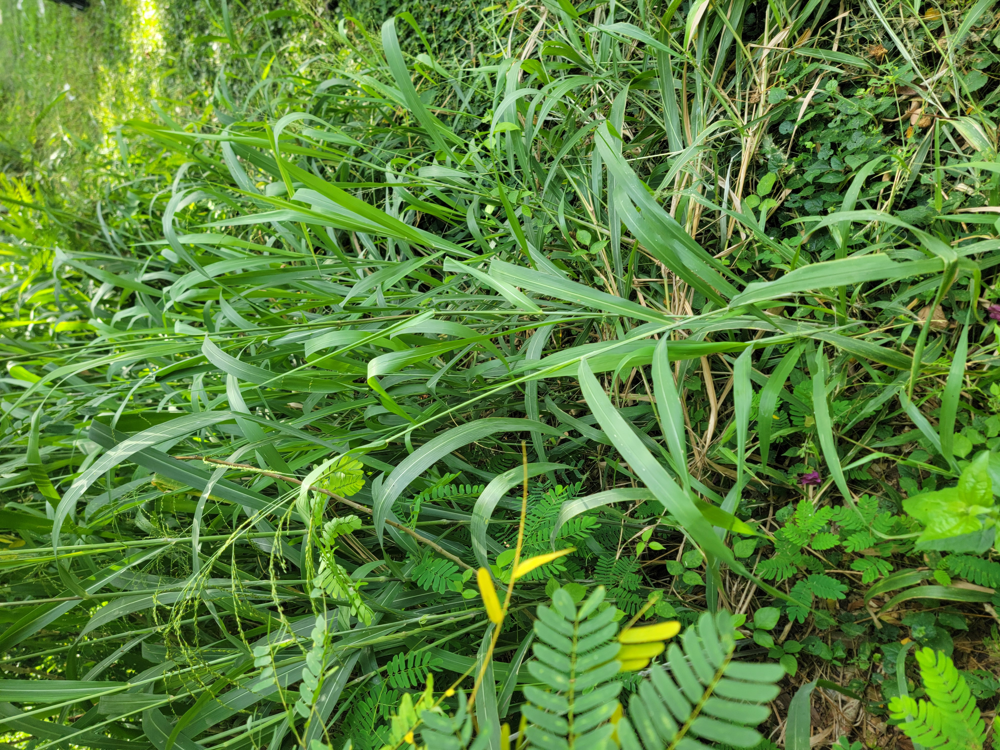

Les végétaux sonr dominés par les graminées. elles repoussent rapidement après un incendie. Ce sont des monocotylédone une caracteristique qui expliques leur mode de germination. En effet, les Graminées, notamment le maïs (Zea mays) et le blé (Triticum sp.), possèdent un cotylédon spécialisé appelé scutellum (du latin scutel la, « petit bouclier », qui fait référence à la forme du scutellum). Le scutellum a une grande surface en contact avec l’album en, dont il absorbe beaucoup de nutriment pendant la germination. Les graminées des régions tempérées sont pollinisés par le vent et leurs fleurs n’ont pas de pétales.
enfaits écologiques
Les graminées jouent un rôle crucial dans les écosystèmes
naturels et modifiés par l’homme. Elles fixent le sol
grâce à leurs racines denses, limitant l’érosion De
nombreuses graminées sont cultivées pour l’alimentation
humaine et animale. Les céréales comme le blé, le maïs,
le riz ou l’avoine sont toutes des graminées et représent
ent la base de l’alimentation mondiale.

CYCLE DU MAÏS (Zea mays)
Source: assistance.scolaire.com

Un graminé sauvage de l’espèce maximus (Megathyrsus maximus), très prisé par les ruminants.